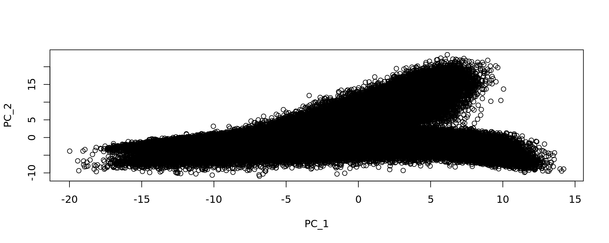
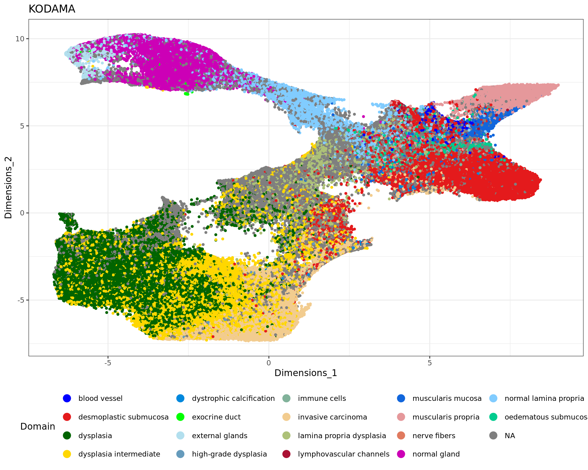

Last updated: 2024-09-04
Checks: 7 0
Knit directory: KODAMA-Analysis/
This reproducible R Markdown analysis was created with workflowr (version 1.7.1). The Checks tab describes the reproducibility checks that were applied when the results were created. The Past versions tab lists the development history.
Great! Since the R Markdown file has been committed to the Git repository, you know the exact version of the code that produced these results.
Great job! The global environment was empty. Objects defined in the global environment can affect the analysis in your R Markdown file in unknown ways. For reproduciblity it’s best to always run the code in an empty environment.
The command set.seed(20240618) was run prior to running
the code in the R Markdown file. Setting a seed ensures that any results
that rely on randomness, e.g. subsampling or permutations, are
reproducible.
Great job! Recording the operating system, R version, and package versions is critical for reproducibility.
Nice! There were no cached chunks for this analysis, so you can be confident that you successfully produced the results during this run.
Great job! Using relative paths to the files within your workflowr project makes it easier to run your code on other machines.
Great! You are using Git for version control. Tracking code development and connecting the code version to the results is critical for reproducibility.
The results in this page were generated with repository version ca72951. See the Past versions tab to see a history of the changes made to the R Markdown and HTML files.
Note that you need to be careful to ensure that all relevant files for
the analysis have been committed to Git prior to generating the results
(you can use wflow_publish or
wflow_git_commit). workflowr only checks the R Markdown
file, but you know if there are other scripts or data files that it
depends on. Below is the status of the Git repository when the results
were generated:
Ignored files:
Ignored: .Rhistory
Untracked files:
Untracked: Elemina.RData
Untracked: data/spots_classification_ALL.csv
Untracked: data/trajectories.RData
Untracked: data/trajectories_VISIUMHD.RData
Untracked: elimina_table.RData
Untracked: output/DLFPC-All-2-3000-300-0.4.RData
Untracked: output/DLFPC-All.RData
Untracked: output/DLFPC-Br5292-2-3000-300-0.3.RData
Untracked: output/DLFPC-Br5292.RData
Untracked: output/DLFPC-Br5595-2-3000-300-0.3.RData
Untracked: output/DLFPC-Br5595.RData
Untracked: output/DLFPC-Br8100-2-3000-300-0.3.RData
Untracked: output/DLFPC-Br8100.RData
Untracked: output/MERFISH.RData
Untracked: output/Prostate.RData
Untracked: output/VisiumHD.RData
Untracked: output/VisiumHD2.RData
Untracked: output/VisiumHD3.RData
Untracked: output/image.RData
Unstaged changes:
Deleted: analysis/DLPFC-12.Rmd
Deleted: analysis/DLPFC-4.Rmd
Modified: analysis/DLPFC.Rmd
Modified: analysis/Giotto.Rmd
Modified: analysis/MERFISH.Rmd
Modified: analysis/Prostate.Rmd
Deleted: analysis/STARmap.Rmd
Note that any generated files, e.g. HTML, png, CSS, etc., are not included in this status report because it is ok for generated content to have uncommitted changes.
These are the previous versions of the repository in which changes were
made to the R Markdown (analysis/VisiumHD.Rmd) and HTML
(docs/VisiumHD.html) files. If you’ve configured a remote
Git repository (see ?wflow_git_remote), click on the
hyperlinks in the table below to view the files as they were in that
past version.
| File | Version | Author | Date | Message |
|---|---|---|---|---|
| Rmd | ca72951 | Stefano Cacciatore | 2024-09-04 | Start my new project |
| html | 098b08e | Stefano Cacciatore | 2024-09-04 | Build site. |
| Rmd | eb8066e | Stefano Cacciatore | 2024-09-04 | Start my new project |
| html | 0010f3c | Stefano Cacciatore | 2024-09-04 | Build site. |
| Rmd | 3f515c0 | Stefano Cacciatore | 2024-09-04 | Start my new project |
| html | 51b0452 | Stefano Cacciatore | 2024-09-03 | Build site. |
| Rmd | c257b0e | Stefano Cacciatore | 2024-09-03 | Start my new project |
| Rmd | 22e2ac6 | Stefano Cacciatore | 2024-08-26 | Start my new project |
| html | d1192e9 | Stefano Cacciatore | 2024-08-12 | Build site. |
| Rmd | 5ef8148 | Stefano Cacciatore | 2024-08-12 | Start my new project |
| html | 3374e66 | Stefano Cacciatore | 2024-08-06 | Build site. |
| html | 35ce733 | Stefano Cacciatore | 2024-08-03 | Build site. |
| html | 82fe167 | Stefano Cacciatore | 2024-07-24 | Build site. |
| Rmd | b422e43 | Stefano Cacciatore | 2024-07-24 | Start my new project |
| html | 6f7daac | Stefano Cacciatore | 2024-07-19 | Build site. |
| Rmd | 5b97082 | tkcaccia | 2024-07-15 | updates |
| Rmd | 7be8f59 | tkcaccia | 2024-07-15 | updates |
| html | 7be8f59 | tkcaccia | 2024-07-15 | updates |
| Rmd | 79f73a2 | GitHub | 2024-07-14 | Update VisiumHD.Rmd |
| html | f8ca54a | tkcaccia | 2024-07-14 | update |
| html | d04c1e7 | GitHub | 2024-07-08 | Update VisiumHD.html |
| html | 754c8bf | GitHub | 2024-07-04 | Update VisiumHD.html |
| html | ee4ee17 | GitHub | 2024-06-19 | Add files via upload |
| Rmd | 615fc05 | GitHub | 2024-06-19 | Add files via upload |
Describe your project. The data can be downloaded using the following script: VisiumHD_CRC_download.sh. This script facilitates access to the raw data, which will then be preprocessed and analyzed in the subsequent steps of our pipeline.
The data can be downloaded using the following script: VisiumHD_CRC_download.sh. This script facilitates access to the raw data, which will then be preprocessed and analyzed in the subsequent steps of our pipeline.
library("ggplot2")
library("patchwork")
library("dplyr")
library("Seurat")
library("KODAMA")
library("KODAMAextra")
library("bigmemory")
localdir="../Colorectal/outs/"
object <- Load10X_Spatial(data.dir = localdir, bin.size = c(8))
vln.plot <- VlnPlot(object, features = "nCount_Spatial.008um", pt.size = 0) + NoLegend()
count.plot <- SpatialFeaturePlot(object, features = "nCount_Spatial.008um", pt.size.factor = 1.2) +
theme(legend.position = "right")
nCount_Spatial=colSums(object@assays$Spatial.008um$counts)
#w= which(nCount_Spatial >10)
#object@assays$Spatial.008um$counts= object@assays$Spatial.008um$counts[,w]
#object@meta.data=object@meta.data[w,]
sp_obj <- subset(
object,
subset = nCount_Spatial.008um > 100)
nCount_Spatial=colSums(sp_obj@assays$Spatial.008um$counts)
counts=sp_obj@assays$Spatial.008um$counts
is_mito <- grepl("(^MT-)|(^mt-)", rownames(counts))
counts <- counts[!is_mito,]
filter_genes_ncounts=1
filter_genes_pcspots=0.5
nspots <- ceiling(filter_genes_pcspots/100 * ncol(counts))
ix_remove <- rowSums(counts >= filter_genes_ncounts) < nspots
counts <- counts[!ix_remove,]
QCgenes <- rownames(counts)
VariableFeatures(sp_obj) = QCgenes
rm(counts)
DefaultAssay(sp_obj) <- "Spatial.008um"
sp_obj <- NormalizeData(sp_obj)
sp_obj <- FindVariableFeatures(sp_obj)
sp_obj <- ScaleData(sp_obj)
xy=as.matrix(GetTissueCoordinates(sp_obj)[,1:2])
sp_obj <- RunPCA(sp_obj, reduction.name = "pca.008um")
dim(sp_obj)[1] 18085 428381plot(Seurat::Embeddings(sp_obj, reduction = "pca.008um"))
#sp_obj <- RunKODAMAmatrix(sp_obj, reduction = "pca.008um",
# FUN= "PLS" ,
# landmarks = 10000,
# splitting = 100,
# f.par.pls = 50,
# spatial.resolution = 0.4,
# n.cores=8)
# print("KODAMA finished")
# config=umap.defaults
# config$n_threads = 8
# config$n_sgd_threads = "auto"
# sp_obj <- RunKODAMAvisualization(sp_obj, method = "UMAP",config=config)
# kk_UMAP=Seurat::Embeddings(sp_obj, reduction = "KODAMA")
# save(kk_UMAP,xy,file="output/VisiumHD.RData")
load("output/VisiumHD3.RData")
rr=read.csv("data/spots_classification_ALL.csv",sep=",")
ss=strsplit(rr[,2],":")
ss=unlist(lapply(ss, function(x) x[2]))
ss=strsplit(ss,",")
ss=unlist(lapply(ss, function(x) x[1]))
ss=gsub("\"","",ss)
rr[,2]=ss
n=ave(1:length(rr[,1]), rr[,1], FUN = seq_along)
rr=rr[n==1,]
rownames(rr)=rr[,1]
rr=rr[rownames(kk_UMAP),]
table(rr[,"classification"])
blood vessel desmoplastic submucosa
1370 38054
dysplasia dysplasia_to_verify
71063 62870
dystrophic calcification Invasive_carcinoma
455 39543
lamina propria dysplasia muscularis mucosa
6970 4785
muscularis propria normal gland
18081 29910
normal lamina propria oedematous submucosa
15108 6309
stroma intermediate stroma invasive carcinoma
6057 12181 library(ggplot2)
cols=sample(rainbow(15))
labels=as.factor(rr[,"classification"])
par(xpd = T, mar = par()$mar + c(0,0,0,7))
plot(kk_UMAP,cex=0.5,pch=20,col=cols[labels])
legend(max(kk_UMAP[,1])+0.05*dist(range(kk_UMAP[,1])), max(kk_UMAP[,2]),
levels(labels),
col = cols,
cex = 0.8,
pch=20)
load("data/trajectories_VISIUMHD.RData")
data=as.matrix(sp_obj@assays$Spatial.008um$scale.data)
data=t(data)
mm1=new_trajectory (kk_UMAP,data = data,trace=tra1$xy)
mm2=new_trajectory (kk_UMAP,data = data,trace=tra2$xy)
mm3=new_trajectory (kk_UMAP,data = data,trace=tra3$xy)
traj=rbind(mm1$trajectory,
mm2$trajectory,
mm3$trajectory)
y=rep(1:20,3)ma=multi_analysis(traj,y,FUN="correlation.test",method="spearman")
rownames(ma) [1] "1" "2" "3" "4" "5" "6" "7" "8" "9" "10"
[11] "11" "12" "13" "14" "15" "16" "17" "18" "19" "20"
[21] "21" "22" "23" "24" "25" "26" "27" "28" "29" "30"
[31] "31" "32" "33" "34" "35" "36" "37" "38" "39" "40"
[41] "41" "42" "43" "44" "45" "46" "47" "48" "49" "50"
[51] "51" "52" "53" "54" "55" "56" "57" "58" "59" "60"
[61] "61" "62" "63" "64" "65" "66" "67" "68" "69" "70"
[71] "71" "72" "73" "74" "75" "76" "77" "78" "79" "80"
[81] "81" "82" "83" "84" "85" "86" "87" "88" "89" "90"
[91] "91" "92" "93" "94" "95" "96" "97" "98" "99" "100"
[101] "101" "102" "103" "104" "105" "106" "107" "108" "109" "110"
[111] "111" "112" "113" "114" "115" "116" "117" "118" "119" "120"
[121] "121" "122" "123" "124" "125" "126" "127" "128" "129" "130"
[131] "131" "132" "133" "134" "135" "136" "137" "138" "139" "140"
[141] "141" "142" "143" "144" "145" "146" "147" "148" "149" "150"
[151] "151" "152" "153" "154" "155" "156" "157" "158" "159" "160"
[161] "161" "162" "163" "164" "165" "166" "167" "168" "169" "170"
[171] "171" "172" "173" "174" "175" "176" "177" "178" "179" "180"
[181] "181" "182" "183" "184" "185" "186" "187" "188" "189" "190"
[191] "191" "192" "193" "194" "195" "196" "197" "198" "199" "200"
[201] "201" "202" "203" "204" "205" "206" "207" "208" "209" "210"
[211] "211" "212" "213" "214" "215" "216" "217" "218" "219" "220"
[221] "221" "222" "223" "224" "225" "226" "227" "228" "229" "230"
[231] "231" "232" "233" "234" "235" "236" "237" "238" "239" "240"
[241] "241" "242" "243" "244" "245" "246" "247" "248" "249" "250"
[251] "251" "252" "253" "254" "255" "256" "257" "258" "259" "260"
[261] "261" "262" "263" "264" "265" "266" "267" "268" "269" "270"
[271] "271" "272" "273" "274" "275" "276" "277" "278" "279" "280"
[281] "281" "282" "283" "284" "285" "286" "287" "288" "289" "290"
[291] "291" "292" "293" "294" "295" "296" "297" "298" "299" "300"
[301] "301" "302" "303" "304" "305" "306" "307" "308" "309" "310"
[311] "311" "312" "313" "314" "315" "316" "317" "318" "319" "320"
[321] "321" "322" "323" "324" "325" "326" "327" "328" "329" "330"
[331] "331" "332" "333" "334" "335" "336" "337" "338" "339" "340"
[341] "341" "342" "343" "344" "345" "346" "347" "348" "349" "350"
[351] "351" "352" "353" "354" "355" "356" "357" "358" "359" "360"
[361] "361" "362" "363" "364" "365" "366" "367" "368" "369" "370"
[371] "371" "372" "373" "374" "375" "376" "377" "378" "379" "380"
[381] "381" "382" "383" "384" "385" "386" "387" "388" "389" "390"
[391] "391" "392" "393" "394" "395" "396" "397" "398" "399" "400"
[401] "401" "402" "403" "404" "405" "406" "407" "408" "409" "410"
[411] "411" "412" "413" "414" "415" "416" "417" "418" "419" "420"
[421] "421" "422" "423" "424" "425" "426" "427" "428" "429" "430"
[431] "431" "432" "433" "434" "435" "436" "437" "438" "439" "440"
[441] "441" "442" "443" "444" "445" "446" "447" "448" "449" "450"
[451] "451" "452" "453" "454" "455" "456" "457" "458" "459" "460"
[461] "461" "462" "463" "464" "465" "466" "467" "468" "469" "470"
[471] "471" "472" "473" "474" "475" "476" "477" "478" "479" "480"
[481] "481" "482" "483" "484" "485" "486" "487" "488" "489" "490"
[491] "491" "492" "493" "494" "495" "496" "497" "498" "499" "500"
[501] "501" "502" "503" "504" "505" "506" "507" "508" "509" "510"
[511] "511" "512" "513" "514" "515" "516" "517" "518" "519" "520"
[521] "521" "522" "523" "524" "525" "526" "527" "528" "529" "530"
[531] "531" "532" "533" "534" "535" "536" "537" "538" "539" "540"
[541] "541" "542" "543" "544" "545" "546" "547" "548" "549" "550"
[551] "551" "552" "553" "554" "555" "556" "557" "558" "559" "560"
[561] "561" "562" "563" "564" "565" "566" "567" "568" "569" "570"
[571] "571" "572" "573" "574" "575" "576" "577" "578" "579" "580"
[581] "581" "582" "583" "584" "585" "586" "587" "588" "589" "590"
[591] "591" "592" "593" "594" "595" "596" "597" "598" "599" "600"
[601] "601" "602" "603" "604" "605" "606" "607" "608" "609" "610"
[611] "611" "612" "613" "614" "615" "616" "617" "618" "619" "620"
[621] "621" "622" "623" "624" "625" "626" "627" "628" "629" "630"
[631] "631" "632" "633" "634" "635" "636" "637" "638" "639" "640"
[641] "641" "642" "643" "644" "645" "646" "647" "648" "649" "650"
[651] "651" "652" "653" "654" "655" "656" "657" "658" "659" "660"
[661] "661" "662" "663" "664" "665" "666" "667" "668" "669" "670"
[671] "671" "672" "673" "674" "675" "676" "677" "678" "679" "680"
[681] "681" "682" "683" "684" "685" "686" "687" "688" "689" "690"
[691] "691" "692" "693" "694" "695" "696" "697" "698" "699" "700"
[701] "701" "702" "703" "704" "705" "706" "707" "708" "709" "710"
[711] "711" "712" "713" "714" "715" "716" "717" "718" "719" "720"
[721] "721" "722" "723" "724" "725" "726" "727" "728" "729" "730"
[731] "731" "732" "733" "734" "735" "736" "737" "738" "739" "740"
[741] "741" "742" "743" "744" "745" "746" "747" "748" "749" "750"
[751] "751" "752" "753" "754" "755" "756" "757" "758" "759" "760"
[761] "761" "762" "763" "764" "765" "766" "767" "768" "769" "770"
[771] "771" "772" "773" "774" "775" "776" "777" "778" "779" "780"
[781] "781" "782" "783" "784" "785" "786" "787" "788" "789" "790"
[791] "791" "792" "793" "794" "795" "796" "797" "798" "799" "800"
[801] "801" "802" "803" "804" "805" "806" "807" "808" "809" "810"
[811] "811" "812" "813" "814" "815" "816" "817" "818" "819" "820"
[821] "821" "822" "823" "824" "825" "826" "827" "828" "829" "830"
[831] "831" "832" "833" "834" "835" "836" "837" "838" "839" "840"
[841] "841" "842" "843" "844" "845" "846" "847" "848" "849" "850"
[851] "851" "852" "853" "854" "855" "856" "857" "858" "859" "860"
[861] "861" "862" "863" "864" "865" "866" "867" "868" "869" "870"
[871] "871" "872" "873" "874" "875" "876" "877" "878" "879" "880"
[881] "881" "882" "883" "884" "885" "886" "887" "888" "889" "890"
[891] "891" "892" "893" "894" "895" "896" "897" "898" "899" "900"
[901] "901" "902" "903" "904" "905" "906" "907" "908" "909" "910"
[911] "911" "912" "913" "914" "915" "916" "917" "918" "919" "920"
[921] "921" "922" "923" "924" "925" "926" "927" "928" "929" "930"
[931] "931" "932" "933" "934" "935" "936" "937" "938" "939" "940"
[941] "941" "942" "943" "944" "945" "946" "947" "948" "949" "950"
[951] "951" "952" "953" "954" "955" "956" "957" "958" "959" "960"
[961] "961" "962" "963" "964" "965" "966" "967" "968" "969" "970"
[971] "971" "972" "973" "974" "975" "976" "977" "978" "979" "980"
[981] "981" "982" "983" "984" "985" "986" "987" "988" "989" "990"
[991] "991" "992" "993" "994" "995" "996" "997" "998" "999" "1000"
[1001] "1001" "1002" "1003" "1004" "1005" "1006" "1007" "1008" "1009" "1010"
[1011] "1011" "1012" "1013" "1014" "1015" "1016" "1017" "1018" "1019" "1020"
[1021] "1021" "1022" "1023" "1024" "1025" "1026" "1027" "1028" "1029" "1030"
[1031] "1031" "1032" "1033" "1034" "1035" "1036" "1037" "1038" "1039" "1040"
[1041] "1041" "1042" "1043" "1044" "1045" "1046" "1047" "1048" "1049" "1050"
[1051] "1051" "1052" "1053" "1054" "1055" "1056" "1057" "1058" "1059" "1060"
[1061] "1061" "1062" "1063" "1064" "1065" "1066" "1067" "1068" "1069" "1070"
[1071] "1071" "1072" "1073" "1074" "1075" "1076" "1077" "1078" "1079" "1080"
[1081] "1081" "1082" "1083" "1084" "1085" "1086" "1087" "1088" "1089" "1090"
[1091] "1091" "1092" "1093" "1094" "1095" "1096" "1097" "1098" "1099" "1100"
[1101] "1101" "1102" "1103" "1104" "1105" "1106" "1107" "1108" "1109" "1110"
[1111] "1111" "1112" "1113" "1114" "1115" "1116" "1117" "1118" "1119" "1120"
[1121] "1121" "1122" "1123" "1124" "1125" "1126" "1127" "1128" "1129" "1130"
[1131] "1131" "1132" "1133" "1134" "1135" "1136" "1137" "1138" "1139" "1140"
[1141] "1141" "1142" "1143" "1144" "1145" "1146" "1147" "1148" "1149" "1150"
[1151] "1151" "1152" "1153" "1154" "1155" "1156" "1157" "1158" "1159" "1160"
[1161] "1161" "1162" "1163" "1164" "1165" "1166" "1167" "1168" "1169" "1170"
[1171] "1171" "1172" "1173" "1174" "1175" "1176" "1177" "1178" "1179" "1180"
[1181] "1181" "1182" "1183" "1184" "1185" "1186" "1187" "1188" "1189" "1190"
[1191] "1191" "1192" "1193" "1194" "1195" "1196" "1197" "1198" "1199" "1200"
[1201] "1201" "1202" "1203" "1204" "1205" "1206" "1207" "1208" "1209" "1210"
[1211] "1211" "1212" "1213" "1214" "1215" "1216" "1217" "1218" "1219" "1220"
[1221] "1221" "1222" "1223" "1224" "1225" "1226" "1227" "1228" "1229" "1230"
[1231] "1231" "1232" "1233" "1234" "1235" "1236" "1237" "1238" "1239" "1240"
[1241] "1241" "1242" "1243" "1244" "1245" "1246" "1247" "1248" "1249" "1250"
[1251] "1251" "1252" "1253" "1254" "1255" "1256" "1257" "1258" "1259" "1260"
[1261] "1261" "1262" "1263" "1264" "1265" "1266" "1267" "1268" "1269" "1270"
[1271] "1271" "1272" "1273" "1274" "1275" "1276" "1277" "1278" "1279" "1280"
[1281] "1281" "1282" "1283" "1284" "1285" "1286" "1287" "1288" "1289" "1290"
[1291] "1291" "1292" "1293" "1294" "1295" "1296" "1297" "1298" "1299" "1300"
[1301] "1301" "1302" "1303" "1304" "1305" "1306" "1307" "1308" "1309" "1310"
[1311] "1311" "1312" "1313" "1314" "1315" "1316" "1317" "1318" "1319" "1320"
[1321] "1321" "1322" "1323" "1324" "1325" "1326" "1327" "1328" "1329" "1330"
[1331] "1331" "1332" "1333" "1334" "1335" "1336" "1337" "1338" "1339" "1340"
[1341] "1341" "1342" "1343" "1344" "1345" "1346" "1347" "1348" "1349" "1350"
[1351] "1351" "1352" "1353" "1354" "1355" "1356" "1357" "1358" "1359" "1360"
[1361] "1361" "1362" "1363" "1364" "1365" "1366" "1367" "1368" "1369" "1370"
[1371] "1371" "1372" "1373" "1374" "1375" "1376" "1377" "1378" "1379" "1380"
[1381] "1381" "1382" "1383" "1384" "1385" "1386" "1387" "1388" "1389" "1390"
[1391] "1391" "1392" "1393" "1394" "1395" "1396" "1397" "1398" "1399" "1400"
[1401] "1401" "1402" "1403" "1404" "1405" "1406" "1407" "1408" "1409" "1410"
[1411] "1411" "1412" "1413" "1414" "1415" "1416" "1417" "1418" "1419" "1420"
[1421] "1421" "1422" "1423" "1424" "1425" "1426" "1427" "1428" "1429" "1430"
[1431] "1431" "1432" "1433" "1434" "1435" "1436" "1437" "1438" "1439" "1440"
[1441] "1441" "1442" "1443" "1444" "1445" "1446" "1447" "1448" "1449" "1450"
[1451] "1451" "1452" "1453" "1454" "1455" "1456" "1457" "1458" "1459" "1460"
[1461] "1461" "1462" "1463" "1464" "1465" "1466" "1467" "1468" "1469" "1470"
[1471] "1471" "1472" "1473" "1474" "1475" "1476" "1477" "1478" "1479" "1480"
[1481] "1481" "1482" "1483" "1484" "1485" "1486" "1487" "1488" "1489" "1490"
[1491] "1491" "1492" "1493" "1494" "1495" "1496" "1497" "1498" "1499" "1500"
[1501] "1501" "1502" "1503" "1504" "1505" "1506" "1507" "1508" "1509" "1510"
[1511] "1511" "1512" "1513" "1514" "1515" "1516" "1517" "1518" "1519" "1520"
[1521] "1521" "1522" "1523" "1524" "1525" "1526" "1527" "1528" "1529" "1530"
[1531] "1531" "1532" "1533" "1534" "1535" "1536" "1537" "1538" "1539" "1540"
[1541] "1541" "1542" "1543" "1544" "1545" "1546" "1547" "1548" "1549" "1550"
[1551] "1551" "1552" "1553" "1554" "1555" "1556" "1557" "1558" "1559" "1560"
[1561] "1561" "1562" "1563" "1564" "1565" "1566" "1567" "1568" "1569" "1570"
[1571] "1571" "1572" "1573" "1574" "1575" "1576" "1577" "1578" "1579" "1580"
[1581] "1581" "1582" "1583" "1584" "1585" "1586" "1587" "1588" "1589" "1590"
[1591] "1591" "1592" "1593" "1594" "1595" "1596" "1597" "1598" "1599" "1600"
[1601] "1601" "1602" "1603" "1604" "1605" "1606" "1607" "1608" "1609" "1610"
[1611] "1611" "1612" "1613" "1614" "1615" "1616" "1617" "1618" "1619" "1620"
[1621] "1621" "1622" "1623" "1624" "1625" "1626" "1627" "1628" "1629" "1630"
[1631] "1631" "1632" "1633" "1634" "1635" "1636" "1637" "1638" "1639" "1640"
[1641] "1641" "1642" "1643" "1644" "1645" "1646" "1647" "1648" "1649" "1650"
[1651] "1651" "1652" "1653" "1654" "1655" "1656" "1657" "1658" "1659" "1660"
[1661] "1661" "1662" "1663" "1664" "1665" "1666" "1667" "1668" "1669" "1670"
[1671] "1671" "1672" "1673" "1674" "1675" "1676" "1677" "1678" "1679" "1680"
[1681] "1681" "1682" "1683" "1684" "1685" "1686" "1687" "1688" "1689" "1690"
[1691] "1691" "1692" "1693" "1694" "1695" "1696" "1697" "1698" "1699" "1700"
[1701] "1701" "1702" "1703" "1704" "1705" "1706" "1707" "1708" "1709" "1710"
[1711] "1711" "1712" "1713" "1714" "1715" "1716" "1717" "1718" "1719" "1720"
[1721] "1721" "1722" "1723" "1724" "1725" "1726" "1727" "1728" "1729" "1730"
[1731] "1731" "1732" "1733" "1734" "1735" "1736" "1737" "1738" "1739" "1740"
[1741] "1741" "1742" "1743" "1744" "1745" "1746" "1747" "1748" "1749" "1750"
[1751] "1751" "1752" "1753" "1754" "1755" "1756" "1757" "1758" "1759" "1760"
[1761] "1761" "1762" "1763" "1764" "1765" "1766" "1767" "1768" "1769" "1770"
[1771] "1771" "1772" "1773" "1774" "1775" "1776" "1777" "1778" "1779" "1780"
[1781] "1781" "1782" "1783" "1784" "1785" "1786" "1787" "1788" "1789" "1790"
[1791] "1791" "1792" "1793" "1794" "1795" "1796" "1797" "1798" "1799" "1800"
[1801] "1801" "1802" "1803" "1804" "1805" "1806" "1807" "1808" "1809" "1810"
[1811] "1811" "1812" "1813" "1814" "1815" "1816" "1817" "1818" "1819" "1820"
[1821] "1821" "1822" "1823" "1824" "1825" "1826" "1827" "1828" "1829" "1830"
[1831] "1831" "1832" "1833" "1834" "1835" "1836" "1837" "1838" "1839" "1840"
[1841] "1841" "1842" "1843" "1844" "1845" "1846" "1847" "1848" "1849" "1850"
[1851] "1851" "1852" "1853" "1854" "1855" "1856" "1857" "1858" "1859" "1860"
[1861] "1861" "1862" "1863" "1864" "1865" "1866" "1867" "1868" "1869" "1870"
[1871] "1871" "1872" "1873" "1874" "1875" "1876" "1877" "1878" "1879" "1880"
[1881] "1881" "1882" "1883" "1884" "1885" "1886" "1887" "1888" "1889" "1890"
[1891] "1891" "1892" "1893" "1894" "1895" "1896" "1897" "1898" "1899" "1900"
[1901] "1901" "1902" "1903" "1904" "1905" "1906" "1907" "1908" "1909" "1910"
[1911] "1911" "1912" "1913" "1914" "1915" "1916" "1917" "1918" "1919" "1920"
[1921] "1921" "1922" "1923" "1924" "1925" "1926" "1927" "1928" "1929" "1930"
[1931] "1931" "1932" "1933" "1934" "1935" "1936" "1937" "1938" "1939" "1940"
[1941] "1941" "1942" "1943" "1944" "1945" "1946" "1947" "1948" "1949" "1950"
[1951] "1951" "1952" "1953" "1954" "1955" "1956" "1957" "1958" "1959" "1960"
[1961] "1961" "1962" "1963" "1964" "1965" "1966" "1967" "1968" "1969" "1970"
[1971] "1971" "1972" "1973" "1974" "1975" "1976" "1977" "1978" "1979" "1980"
[1981] "1981" "1982" "1983" "1984" "1985" "1986" "1987" "1988" "1989" "1990"
[1991] "1991" "1992" "1993" "1994" "1995" "1996" "1997" "1998" "1999" "2000"ma=ma[order(as.numeric(ma$`p-value`)),]
colnames(ma)=c("Feature ","rho ","p-value ","FDR ")knitr::kable(ma[1:30,],row.names=FALSE)| Feature | rho | p-value | FDR |
|---|---|---|---|
| LCN2 | -0.90 | 1.22e-22 | 1.50e-19 |
| CXCL2 | -0.78 | 2.82e-13 | 1.48e-10 |
| CXCL3 | -0.78 | 3.62e-13 | 1.48e-10 |
| PI3 | -0.77 | 1.04e-12 | 3.21e-10 |
| GPX2 | -0.76 | 1.57e-12 | 3.85e-10 |
| SOD2 | -0.72 | 5.82e-11 | 1.19e-08 |
| CCL20 | -0.72 | 9.89e-11 | 1.74e-08 |
| MUC1 | -0.68 | 2.03e-09 | 3.12e-07 |
| TRIM31 | -0.66 | 8.18e-09 | 1.12e-06 |
| BACE2 | -0.65 | 1.46e-08 | 1.79e-06 |
| SPINK1 | -0.65 | 2.39e-08 | 2.67e-06 |
| CXCL1 | -0.64 | 5.02e-08 | 5.15e-06 |
| CDC25B | -0.63 | 6.51e-08 | 6.16e-06 |
| S100P | -0.60 | 4.58e-07 | 4.03e-05 |
| ID1 | -0.59 | 6.07e-07 | 4.98e-05 |
| LRATD1 | -0.58 | 1.38e-06 | 1.06e-04 |
| FXYD3 | -0.57 | 1.89e-06 | 1.37e-04 |
| SELENBP1 | -0.57 | 2.29e-06 | 1.56e-04 |
| NAMPT | -0.57 | 2.5e-06 | 1.62e-04 |
| LGR5 | 0.56 | 2.72e-06 | 1.67e-04 |
| AREG | -0.56 | 3.32e-06 | 1.94e-04 |
| CDC20 | -0.56 | 3.69e-06 | 2.07e-04 |
| STMN3 | -0.56 | 3.95e-06 | 2.11e-04 |
| NCOA7 | -0.55 | 6.49e-06 | 3.32e-04 |
| S100A9 | -0.54 | 7.43e-06 | 3.65e-04 |
| DNTTIP1 | -0.54 | 8.47e-06 | 4.01e-04 |
| PTP4A3 | -0.53 | 1.22e-05 | 5.55e-04 |
| UBE2C | -0.53 | 1.28e-05 | 5.55e-04 |
| CFB | -0.53 | 1.31e-05 | 5.55e-04 |
| NOS2 | -0.52 | 1.71e-05 | 7.00e-04 |
lab=rr[,"classification"]
sel=lab==" stroma invasive carcinoma" | lab==" stroma intermediate"
data.sel=data[which(sel),]
lab=as.factor(as.vector(lab[which(sel)]))
ma=multi_analysis(data.sel,lab)
ma=ma[order(as.numeric(ma$`p-value`)),]knitr::kable(ma[1:30,],row.names=FALSE)| Feature | stroma intermediate | stroma invasive carcinoma | p-value | FDR |
|---|---|---|---|---|
| IGFBP3, median [IQR] | -0.251 [-0.251 -0.251] | -0.251 [-0.251 3.156] | 2.21e-152 | 4.26e-149 |
| SFRP4, median [IQR] | -0.223 [-0.223 -0.223] | -0.223 [-0.223 -0.223] | 3.74e-123 | 3.60e-120 |
| CCN1, median [IQR] | -0.241 [-0.241 -0.241] | -0.241 [-0.241 -0.241] | 4.14e-119 | 2.66e-116 |
| FN1, median [IQR] | -0.429 [-0.429 1.338] | -0.429 [-0.429 2.452] | 2.56e-118 | 1.23e-115 |
| MMP11, median [IQR] | -0.217 [-0.217 -0.217] | -0.217 [-0.217 -0.217] | 5.01e-118 | 1.93e-115 |
| SFRP2, median [IQR] | -0.2 [-0.2 -0.2] | -0.2 [-0.2 -0.2] | 9.59e-114 | 3.08e-111 |
| FOS, median [IQR] | -0.445 [-0.445 -0.445] | -0.445 [-0.445 -0.445] | 1.46e-108 | 4.03e-106 |
| COMP, median [IQR] | -0.159 [-0.159 -0.159] | -0.159 [-0.159 -0.159] | 1.47e-103 | 3.54e-101 |
| TIMP3, median [IQR] | -0.434 [-0.434 2.094] | -0.434 [-0.434 2.747] | 8.15e-99 | 1.74e-96 |
| COL11A1, median [IQR] | -0.148 [-0.148 -0.148] | -0.148 [-0.148 -0.148] | 1.78e-89 | 3.43e-87 |
| APOE, median [IQR] | -0.242 [-0.242 -0.242] | -0.242 [-0.242 -0.242] | 2.09e-89 | 3.66e-87 |
| CTHRC1, median [IQR] | -0.214 [-0.214 -0.214] | -0.214 [-0.214 -0.214] | 2.36e-84 | 3.78e-82 |
| ADAMDEC1, median [IQR] | -0.174 [-0.174 -0.174] | -0.174 [-0.174 -0.174] | 2.43e-83 | 3.59e-81 |
| SPP1, median [IQR] | -0.155 [-0.155 -0.155] | -0.155 [-0.155 -0.155] | 9.4e-83 | 1.29e-80 |
| SULF1, median [IQR] | -0.221 [-0.221 -0.221] | -0.221 [-0.221 -0.221] | 2.47e-82 | 3.17e-80 |
| DUSP1, median [IQR] | -0.304 [-0.304 -0.304] | -0.304 [-0.304 -0.304] | 6.48e-78 | 7.80e-76 |
| TRAC, median [IQR] | -0.218 [-0.218 -0.218] | -0.218 [-0.218 -0.218] | 1.68e-77 | 1.90e-75 |
| TRBC2, median [IQR] | -0.206 [-0.206 -0.206] | -0.206 [-0.206 -0.206] | 3.94e-76 | 4.22e-74 |
| SPARC, median [IQR] | 1.55 [-0.551 1.948] | 1.755 [1.09 2.133] | 9.43e-68 | 9.56e-66 |
| HTRA3, median [IQR] | -0.184 [-0.184 -0.184] | -0.184 [-0.184 -0.184] | 2.42e-64 | 2.33e-62 |
| COL1A2, median [IQR] | 1.514 [-0.531 1.985] | 1.758 [-0.531 2.217] | 1.09e-62 | 1.00e-60 |
| AEBP1, median [IQR] | -0.302 [-0.302 -0.302] | -0.302 [-0.302 2.855] | 4.14e-61 | 3.62e-59 |
| SRGN, median [IQR] | -0.395 [-0.395 1.975] | -0.395 [-0.395 -0.395] | 8.41e-61 | 7.04e-59 |
| TRBC1, median [IQR] | -0.142 [-0.142 -0.142] | -0.142 [-0.142 -0.142] | 3.85e-60 | 3.09e-58 |
| COL1A1, median [IQR] | 1.502 [0.885 1.915] | 1.687 [1.037 2.119] | 5.96e-60 | 4.59e-58 |
| POSTN, median [IQR] | -0.168 [-0.168 -0.168] | -0.168 [-0.168 -0.168] | 3.94e-59 | 2.91e-57 |
| LUM, median [IQR] | -0.37 [-0.37 2.266] | -0.37 [-0.37 2.654] | 9.62e-58 | 6.86e-56 |
| CXCL1, median [IQR] | -0.317 [-0.317 -0.317] | -0.317 [-0.317 -0.317] | 2.54e-55 | 1.74e-53 |
| ACTG2, median [IQR] | -0.273 [-0.273 -0.273] | -0.273 [-0.273 -0.273] | 1.71e-54 | 1.14e-52 |
| IGHG1, median [IQR] | -0.397 [-0.397 -0.397] | -0.397 [-0.397 -0.397] | 1.68e-49 | 1.08e-47 |
lab=rr[,"classification"]
sel=lab==" stroma invasive carcinoma" | lab==" desmoplastic submucosa"
data.sel=data[which(sel),]
lab=as.factor(as.vector(lab[which(sel)]))
ma=multi_analysis(data.sel,lab)
ma=ma[order(as.numeric(ma$`p-value`)),]knitr::kable(ma[1:30,],row.names=FALSE)| Feature | desmoplastic submucosa | stroma invasive carcinoma | p-value | FDR |
|---|---|---|---|---|
| HTRA3, median [IQR] | -0.184 [-0.184 -0.184] | -0.184 [-0.184 -0.184] | 0e+00 | 0.00e+00 |
| SPP1, median [IQR] | -0.155 [-0.155 -0.155] | -0.155 [-0.155 -0.155] | 0e+00 | 0.00e+00 |
| MMP12, median [IQR] | -0.257 [-0.257 -0.257] | -0.257 [-0.257 -0.257] | 0e+00 | 0.00e+00 |
| MGP, median [IQR] | -0.29 [-0.29 3.069] | -0.29 [-0.29 -0.29] | 0e+00 | 0.00e+00 |
| IFI30, median [IQR] | -0.374 [-0.374 -0.374] | -0.374 [-0.374 -0.374] | 0e+00 | 0.00e+00 |
| APOE, median [IQR] | -0.242 [-0.242 -0.242] | -0.242 [-0.242 -0.242] | 0e+00 | 0.00e+00 |
| MMP9, median [IQR] | -0.135 [-0.135 -0.135] | -0.135 [-0.135 -0.135] | 0e+00 | 0.00e+00 |
| MMP11, median [IQR] | -0.217 [-0.217 -0.217] | -0.217 [-0.217 -0.217] | 0e+00 | 0.00e+00 |
| GREM1, median [IQR] | -0.207 [-0.207 -0.207] | -0.207 [-0.207 -0.207] | 3e-258 | 6.60e-256 |
| MMP2, median [IQR] | 2.181 [-0.411 2.74] | -0.411 [-0.411 2.399] | 6.56e-251 | 1.30e-248 |
| CTSB, median [IQR] | -0.516 [-0.516 -0.516] | -0.516 [-0.516 1.969] | 1.65e-239 | 2.97e-237 |
| F3, median [IQR] | -0.27 [-0.27 -0.27] | -0.27 [-0.27 -0.27] | 5.18e-236 | 8.55e-234 |
| IGFBP5, median [IQR] | -0.296 [-0.296 -0.296] | -0.296 [-0.296 3.11] | 1.22e-223 | 1.87e-221 |
| IGKC, median [IQR] | -0.696 [-0.696 1.273] | -0.696 [-0.696 0.8] | 2.1e-216 | 2.98e-214 |
| SFRP2, median [IQR] | -0.2 [-0.2 -0.2] | -0.2 [-0.2 -0.2] | 7.45e-208 | 9.85e-206 |
| CD68, median [IQR] | -0.255 [-0.255 -0.255] | -0.255 [-0.255 -0.255] | 7.07e-180 | 8.76e-178 |
| PHGR1, median [IQR] | -0.749 [-0.749 -0.749] | -0.749 [-0.749 -0.749] | 3.88e-171 | 4.52e-169 |
| RGS5, median [IQR] | -0.221 [-0.221 -0.221] | -0.221 [-0.221 -0.221] | 6.88e-171 | 7.58e-169 |
| IGHG1, median [IQR] | -0.397 [-0.397 1.793] | -0.397 [-0.397 -0.397] | 5.59e-167 | 5.83e-165 |
| COL14A1, median [IQR] | -0.184 [-0.184 -0.184] | -0.184 [-0.184 -0.184] | 3.46e-166 | 3.43e-164 |
| CTSD, median [IQR] | -0.226 [-0.226 -0.226] | -0.226 [-0.226 -0.226] | 2.21e-165 | 2.08e-163 |
| APOC1, median [IQR] | -0.093 [-0.093 -0.093] | -0.093 [-0.093 -0.093] | 1.45e-164 | 1.31e-162 |
| LYZ, median [IQR] | -0.317 [-0.317 -0.317] | -0.317 [-0.317 -0.317] | 5.5e-161 | 4.74e-159 |
| MME, median [IQR] | -0.371 [-0.371 -0.371] | -0.371 [-0.371 -0.371] | 2.52e-151 | 2.08e-149 |
| CCN1, median [IQR] | -0.241 [-0.241 -0.241] | -0.241 [-0.241 -0.241] | 2.38e-147 | 1.89e-145 |
| TIMP3, median [IQR] | -0.434 [-0.434 2.4] | -0.434 [-0.434 2.747] | 4.51e-146 | 3.43e-144 |
| ACP5, median [IQR] | -0.13 [-0.13 -0.13] | -0.13 [-0.13 -0.13] | 6.7e-146 | 4.91e-144 |
| COL1A1, median [IQR] | 1.919 [1.359 2.256] | 1.687 [1.037 2.119] | 3.6e-144 | 2.55e-142 |
| MMP1, median [IQR] | -0.117 [-0.117 -0.117] | -0.117 [-0.117 -0.117] | 1.17e-142 | 7.97e-141 |
| LPL, median [IQR] | -0.081 [-0.081 -0.081] | -0.081 [-0.081 -0.081] | 6.33e-142 | 4.18e-140 |
sessionInfo()R version 4.4.1 (2024-06-14)
Platform: x86_64-pc-linux-gnu
Running under: Ubuntu 20.04.6 LTS
Matrix products: default
BLAS: /usr/lib/x86_64-linux-gnu/blas/libblas.so.3.9.0
LAPACK: /usr/lib/x86_64-linux-gnu/lapack/liblapack.so.3.9.0
locale:
[1] LC_CTYPE=en_US.UTF-8 LC_NUMERIC=C
[3] LC_TIME=en_US.UTF-8 LC_COLLATE=en_US.UTF-8
[5] LC_MONETARY=en_US.UTF-8 LC_MESSAGES=en_US.UTF-8
[7] LC_PAPER=en_US.UTF-8 LC_NAME=C
[9] LC_ADDRESS=C LC_TELEPHONE=C
[11] LC_MEASUREMENT=en_US.UTF-8 LC_IDENTIFICATION=C
time zone: Etc/UTC
tzcode source: system (glibc)
attached base packages:
[1] parallel stats graphics grDevices utils datasets methods
[8] base
other attached packages:
[1] KODAMAextra_1.0 bigmemory_4.6.4 rgl_1.3.1 misc3d_0.9-1
[5] e1071_1.7-14 doParallel_1.0.17 iterators_1.0.14 foreach_1.5.2
[9] KODAMA_3.1 umap_0.2.10.0 Rtsne_0.17 minerva_1.5.10
[13] Seurat_5.1.0 SeuratObject_5.0.2 sp_2.1-4 dplyr_1.1.4
[17] patchwork_1.2.0 ggplot2_3.5.1 workflowr_1.7.1
loaded via a namespace (and not attached):
[1] RColorBrewer_1.1-3 rstudioapi_0.16.0 jsonlite_1.8.8
[4] magrittr_2.0.3 ggbeeswarm_0.7.2 spatstat.utils_3.1-0
[7] farver_2.1.2 rmarkdown_2.27 fs_1.6.4
[10] vctrs_0.6.5 ROCR_1.0-11 spatstat.explore_3.3-2
[13] base64enc_0.1-3 askpass_1.2.0 htmltools_0.5.8.1
[16] sass_0.4.9 sctransform_0.4.1 parallelly_1.38.0
[19] KernSmooth_2.23-24 bslib_0.7.0 htmlwidgets_1.6.4
[22] ica_1.0-3 plyr_1.8.9 plotly_4.10.4
[25] zoo_1.8-12 cachem_1.1.0 uuid_1.2-1
[28] whisker_0.4.1 igraph_2.0.3 mime_0.12
[31] lifecycle_1.0.4 pkgconfig_2.0.3 Matrix_1.7-0
[34] R6_2.5.1 fastmap_1.2.0 fitdistrplus_1.2-1
[37] future_1.34.0 shiny_1.9.1 digest_0.6.36
[40] colorspace_2.1-0 ps_1.7.7 rprojroot_2.0.4
[43] tensor_1.5 RSpectra_0.16-1 irlba_2.3.5.1
[46] progressr_0.14.0 fansi_1.0.6 spatstat.sparse_3.1-0
[49] httr_1.4.7 polyclip_1.10-7 abind_1.4-5
[52] compiler_4.4.1 proxy_0.4-27 bit64_4.0.5
[55] withr_3.0.0 fastDummies_1.7.4 highr_0.11
[58] MASS_7.3-61 openssl_2.2.0 tools_4.4.1
[61] vipor_0.4.7 lmtest_0.9-40 beeswarm_0.4.0
[64] httpuv_1.6.15 future.apply_1.11.2 goftest_1.2-3
[67] glue_1.7.0 callr_3.7.6 nlme_3.1-166
[70] promises_1.3.0 grid_4.4.1 getPass_0.2-4
[73] cluster_2.1.6 reshape2_1.4.4 generics_0.1.3
[76] hdf5r_1.3.11 gtable_0.3.5 spatstat.data_3.1-2
[79] class_7.3-22 tidyr_1.3.1 data.table_1.15.4
[82] utf8_1.2.4 spatstat.geom_3.3-2 RcppAnnoy_0.0.22
[85] ggrepel_0.9.5 RANN_2.6.2 pillar_1.9.0
[88] stringr_1.5.1 spam_2.10-0 RcppHNSW_0.6.0
[91] later_1.3.2 splines_4.4.1 lattice_0.22-6
[94] bit_4.0.5 survival_3.7-0 deldir_2.0-4
[97] tidyselect_1.2.1 miniUI_0.1.1.1 pbapply_1.7-2
[100] knitr_1.48 git2r_0.33.0 bigmemory.sri_0.1.8
[103] gridExtra_2.3 scattermore_1.2 xfun_0.45
[106] matrixStats_1.3.0 stringi_1.8.4 lazyeval_0.2.2
[109] yaml_2.3.9 evaluate_0.24.0 codetools_0.2-20
[112] tcltk_4.4.1 tibble_3.2.1 cli_3.6.3
[115] uwot_0.2.2 arrow_16.1.0 xtable_1.8-4
[118] reticulate_1.38.0 munsell_0.5.1 processx_3.8.4
[121] jquerylib_0.1.4 Rcpp_1.0.12 globals_0.16.3
[124] spatstat.random_3.3-1 png_0.1-8 ggrastr_1.0.2
[127] spatstat.univar_3.0-0 assertthat_0.2.1 dotCall64_1.1-1
[130] listenv_0.9.1 viridisLite_0.4.2 scales_1.3.0
[133] ggridges_0.5.6 leiden_0.4.3.1 purrr_1.0.2
[136] rlang_1.1.4 cowplot_1.1.3